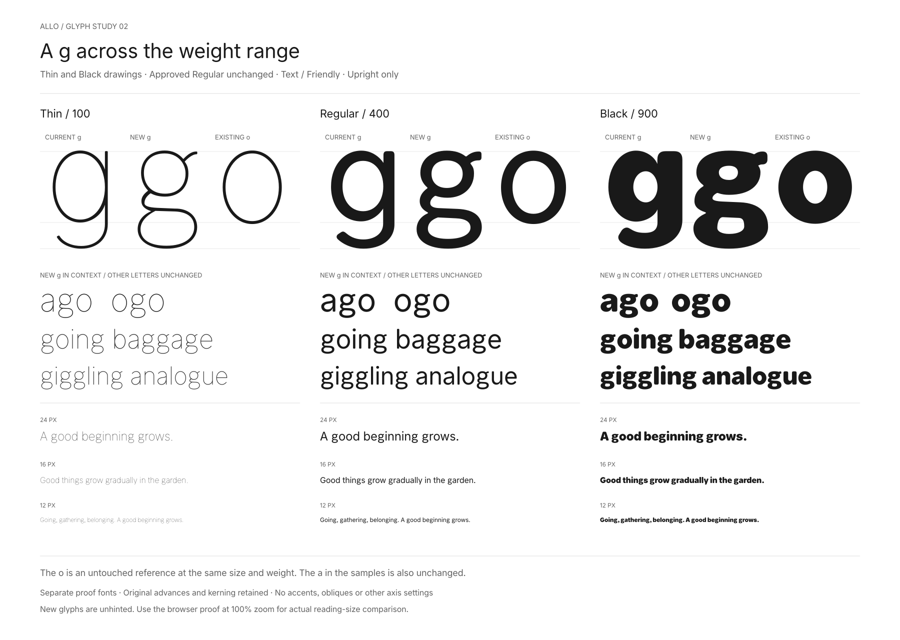
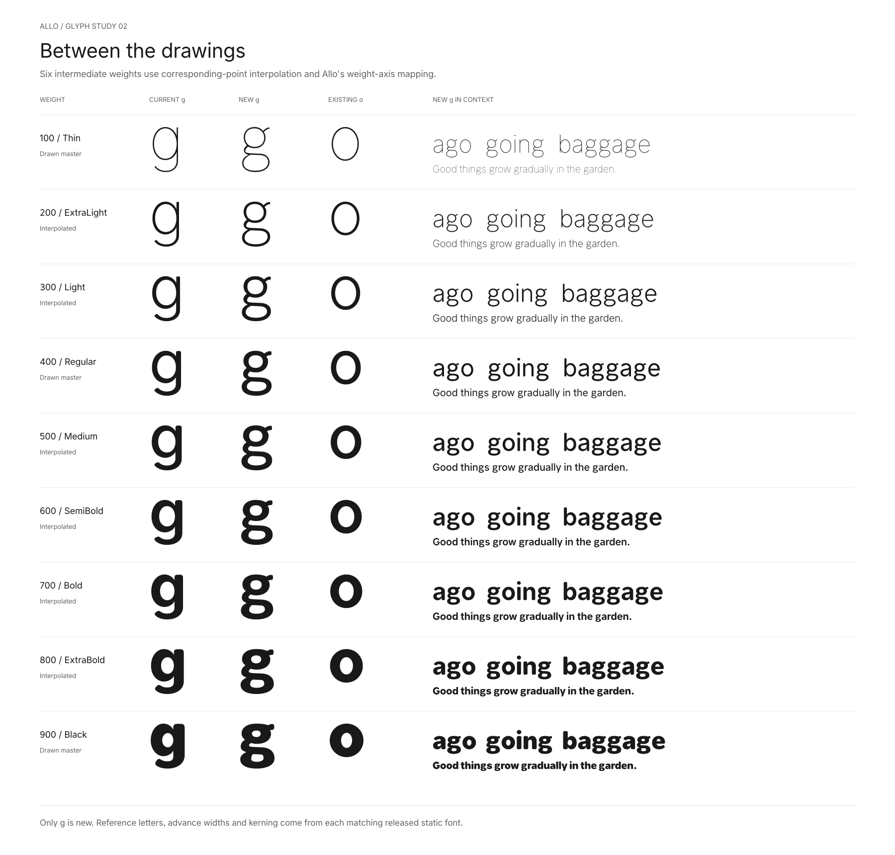

A double-storey g across the weight range
Study 02: new Thin and Black drawings, the approved Regular, and six interpolated weights. The existing o sits alongside each g as an untouched stroke-weight and curve reference. The a in the text is also unchanged.
Upright, Text / Friendly only. Both font families are embedded: no installation or network access needed. These are nine separate static proof weights, not a completed variable font. Only plain lowercase g is changed.
Loading proof fonts…
Current g / existing o
g o
A good beginning grows.
Good things grow gradually in the garden.
Going, gathering, belonging. A good beginning grows.
New g / the same existing o
g o
A good beginning grows.
Good things grow gradually in the garden.
Going, gathering, belonging. A good beginning grows.
Use browser zoom at 100% for the 24, 16 and 12 px samples. The new g is unhinted; the existing letters retain release hinting. Spacing is inherited and provisional. Accents, obliques, optical-size and roundness variations are not implemented.
Drawn endpoints and approved Regular

All nine weights: interpolation ladder

Master sheet SVG · Master sheet PNG · Interpolation SVG · Interpolation PNG · Build and scope notes · SIL Open Font License